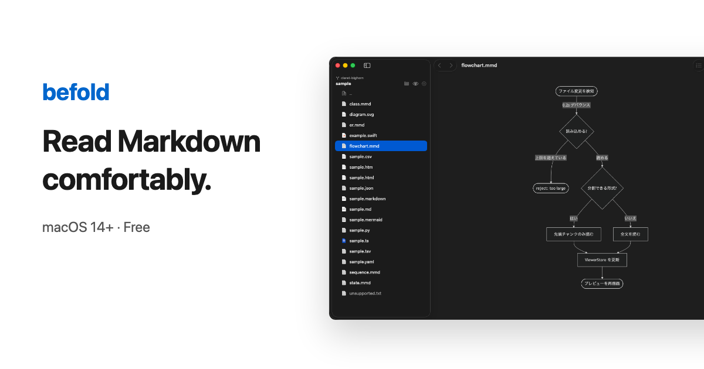

public/images/ogp.png が各配信面でどう切り抜かれるかを並べたもの。
枠は近似なので、余白やフォントは実物と厳密には一致しない。
実際の切り抜きを保証するのは各 SNS のカードデバッガだけ。 このページは「文字が切れないか」「小さくても読めるか」を素早く見るためのもの。
summary_large_image · 1.91:1 · 切り抜きなし

unfurl · 1.91:1 · 幅が狭い
1:1 · 中央基準 · 左右が落ちる
1.91:1 · 160px · 可読性の下限